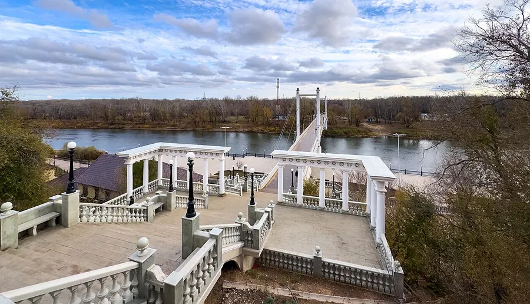
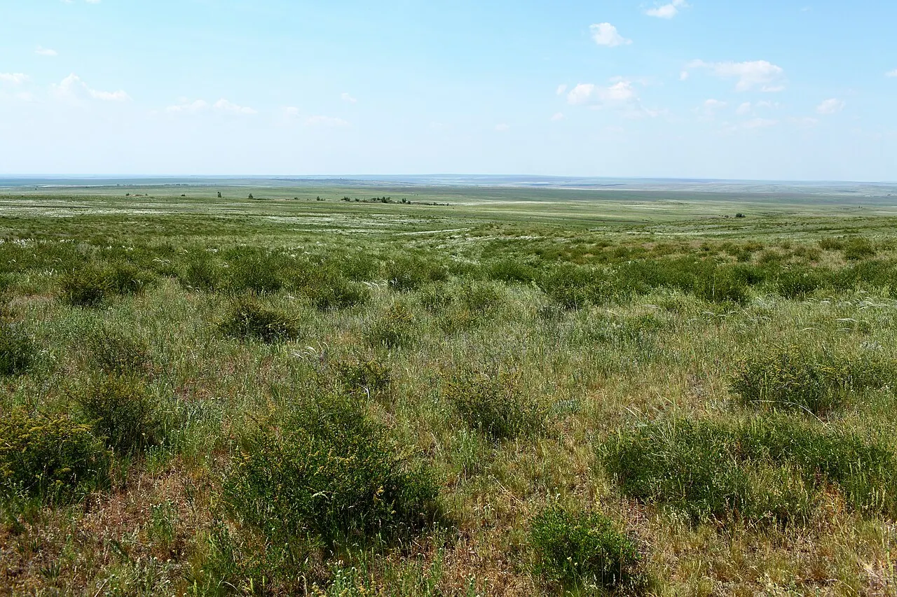
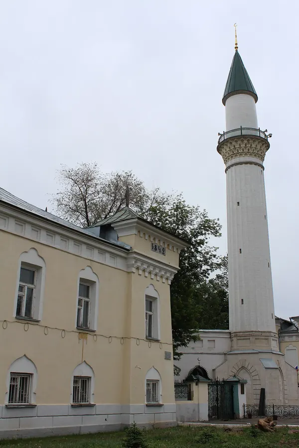
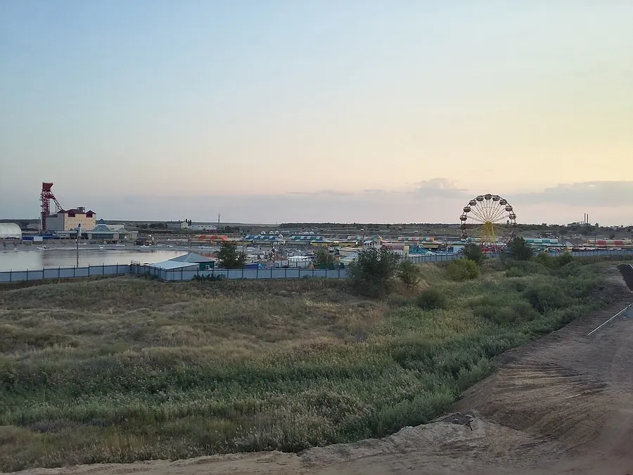
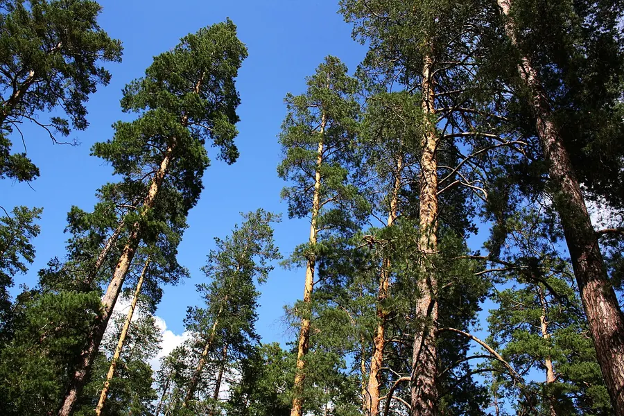

Мост через Урал
Пешеходный мост соединяет набережную Оренбурга с Зауральной рощей. На мосту обозначен символический переход из Европы в Азию.
Оренбуржье начинается с открытой степи. Здесь река Урал проходит мимо купеческих улиц, а сосновый бор соседствует с солёными озёрами.

Область тянется вдоль границы с Казахстаном. На западе её пейзаж определяют степные равнины и лесные массивы, ближе к востоку — отроги Южного Урала. Оренбург вырос из пограничной крепости и стал крупным торговым городом.
Оренбург заложили на месте, где находится нынешний город.
Учредили Оренбургскую губернию. Её центром стал Оренбург.
7 декабря образовали Оренбургскую область.
Город и область получили названия Чкалов и Чкаловская область.
Городу и области вернули названия Оренбург и Оренбургская область.

Пешеходный мост соединяет набережную Оренбурга с Зауральной рощей. На мосту обозначен символический переход из Европы в Азию.

Ансамбль XIX века включает мечеть с восьмигранным залом и отдельный минарет. Проект создал архитектор Александр Брюллов.

Соляные озёра образуют курортную зону. Самое известное, Развал, возникло на месте соляного карьера.

Национальный парк охраняет большой остров соснового леса в степном Заволжье. Бор лежит на территории Оренбургской и Самарской областей.
Главная река области — Урал. В заповеднике «Оренбургский» охраняют несколько участков степи, от ковыльных склонов до долин с небольшими озёрами. На участке «Предуральская степь» живут лошади Пржевальского.
Пуховязание — один из самых узнаваемых промыслов края. В Оренбурге есть музейная галерея, где можно сравнить плотные тёплые платки и тонкие ажурные паутинки.
Кухня региона сложилась на пересечении русских, татарских, башкирских и казахских традиций. Соль-Илецк известен не только озёрами, но и арбузами.